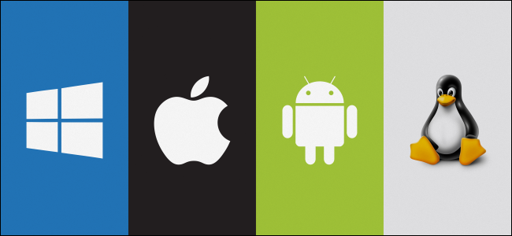

Overview of operating system
An Operating System (OS) is an interface(imediator) between a computer user and computer hardware
An operating system is a software which performs all the basic tasks like file management, memory
management, process management, handling input and output, and controlling peripheral devices such as disk
drives and printers.
Some popular Operating Systems include Linux Operating System, Windows Operating System, VMS, OS/400, AIX, z/OS, etc.
Explain different generations of operating systems.
Ans -
1. First generation 1945 – 1955 - The earliest electronic digital computers had no operating systems. Machines of the time were so primitive that programs were often entered one bit at time on rows of mechanical switches (plug boards). Programming languages were unknown (not even assembly languages).
2.Second generation 1955 – 1965 - By the early 1950's, the routine had improved somewhat with the introduction of punch cards. The General Motors Research Laboratories implemented the first operating systems in early 1950's for their IBM 701. The system of the 50's generally ran one job at a time. These were called singlestream batch processing systems because programs and data were submitted in groups or batches.
3. Third generation 1965 – 1980 - The systems of the 1960's were also batch processing systems, but they were able to take better advantage of the computer's resources by running several jobs at once. So operating systems designers developed the concept of multiprogramming in which several jobs are in main memory at once; a processor is switched from job to job as needed to keep several jobs advancing while keeping the peripheral devices in use.
4. Fourth generation 1980 – With the development of LSI (Large Scale Integration) circuits, chips, operating system entered in the system entered in the personal computer and the workstation age. Microprocessor technology evolved to the point that it becomes possible to build desktop computers as powerful as the mainframes of the 1970s.
Types of OS
Explain different types of operating systems.
Ans -
List of different types of operating systems:
- Batch Operating System.
- Multiprogramming Operating system.
- Time shared operating systems.
- Multiprocessor Operating System.
- Distributed Operating System.
- Real time Operating System.
- Mobile Operating System.
Batch Operating System
The users of a batch operating system do not interact with the computer directly. Each user prepares his
job on an off-line device like punch cards and submits it to the computer operator.

To speed up processing,jobs with similar needs are batched together and run as a group. The programmers
leave their programs with
the operator and the operator then sorts the programs with similar requirements into batches.
- 1) Lack of interaction between the user and the job.
- 2) CPU is often idle, because the speed of the mechanical I/O devices is slower than the CPU.
- 3) Difficult to provide the desired priority
Multiprograming Operating System

1. In this the operating system picks up and begins to execute one of the jobs from memory.
2. Once this job needs an I/O operation operating system switches to another job (CPU and OS always busy).
3. Jobs in the memory are always less than the number of jobs on disk(Job Pool).
4. If several jobs are ready to run at the same time, then the system chooses which one to run through the
process of CPU Scheduling.
5. In Non-multiprogrammed system, there are moments when CPU sits idle and does not do any work.
In Multiprogramming system, CPU will never be idle and keeps on processing.
Multiprocessor operating systems

A Multiprocessor system consists of several processors that share a common physical memory. Multiprocessor system provides higher computing power and speed. In multiprocessor system all processors operate under single operating system. Multiplicity of the processors and how they do act together are transparent to the others.
Advantages
- Execution of several tasks by different processors concurrently, increases the system's throughput without speeding up the execution of a single task.
- If possible, system divides task into many subtasks and then these subtasks can be executed in parallel in different processors. Thereby speeding up the execution of single tasks.
Distributed Operating System

Distributed systems use multiple central processors to serve multiple real-time applications and multiple
users.
Data processing jobs are distributed among the processors accordingly.
The processors communicate with one another through various communication lines (such as high-speed
buses or
telephone lines).
These are referred as loosely coupled systems or distributed systems. Processors
in a
distributed system may vary in size and function.
These processors are referred as sites, nodes, computers,
and so on.
Advantages -
- As there are multiple systems involved, user at one site can utilize the resources of systems at other sites for resource-intensive tasks.
- Fast processing.
- Less load on the Host Machine.
Real Time Operating System

A real-time system is defined as a data processing system in which the time interval required to process
and respond to inputs is so small that it controls the environment.
The time taken by the system to
respond
to an input and display of required updated information is termed as the response time. So in this method,
the response time is very less as compared to online processing.
- Real-time systems are used when there are rigid time requirements on the operation of a processor or the flow of data and real-time systems can be used as a control device in a dedicated application.
- A real-time operating system must have well-defined, fixed time constraints, otherwise the system will fail. For example, Scientific experiments, medical imaging systems, industrial control systems, weapon systems, robots, air traffic control systems, etc.
There are types of real time operating systems.1.Hard Real Time- systems -
Hard real-time systems guarantee that critical tasks complete on time. In hard real-time systems, secondary storage is limited or missing and the data is stored in ROM. In these systems, virtual memory is almost never found.
2.Soft Real Time- systems -Soft real-time systems are less restrictive. A critical real-time task gets priority over other tasks and retains the priority until it completes. Soft real-time systems have limited utility than hard real-time systems. For example, multimedia, virtual reality, Advanced Scientific Projects like undersea exploration and planetary rovers, etc
Time Sharing Operating System

1.Time-sharing is a technique which enables many people, located at various terminals, to use a particular
computer system at the same time. Time-sharing or multitasking is a logical extension of multiprogramming.
Processor's time which is shared among multiple users simultaneously is termed as time-sharing.
2.The main difference between Multiprogrammed Batch Systems and Time-Sharing Systems is that in case of
Multiprogrammed batch systems, the objective is to maximize processor use, whereas in Time-Sharing Systems,
the objective is to minimize response time.
3.Multiple jobs are executed by the CPU by switching between them, but the switches occur so frequently.
Thus,
the user can receive an immediate response. For example, in a transaction processing, the processor executes
each user program in a short burst or quantum of computation. That is, if n users are present, then each
user can get a time quantum. When the user submits the command, the response time is in few seconds at most.
Mobile Operating system

Handheld systems include Personal Digital Assistants(PDAs), such as Palm-Pilots or Cellular Telephones with connectivity to a network such as the Internet. They are usually of limited size due to which most handheld devices have a small amount of memory, include slow processors, and feature small display screens.
Components Of Operating System
Enlist system components. Describe any two in detail.
Ans -
List of operating system components:

- Process management
- Main memory management
- File management
- I/O system management
- Secondary storage management
Process Management
The operating system manages many kinds of activities ranging from user programs to
system programs like printer spooler, name servers, file server etc.
Each of these activities
is encapsulated in a process. A process includes the complete execution context (code,
data, PC, registers, OS resources in use etc.). The basic unit of software that the operating
system deals with in scheduling the work done by the processor is either a process or a
thread, depending on the operating system.
It’s tempting to think of a process as an
application, but that gives an incomplete picture of how processes relate to the operating system and
hardware.
The application you see (word processor or spreadsheet or game) is,
indeed, a process, but that application may cause several other processes to begin, for tasks
like communications with other devices or other computers. There are also numerous
processes that run without giving you direct evidence that they ever exist. A process, then,
is software that performs some action and can be controlled by a user, by other applications
or by the operating system.
It is processes, rather than applications, that the operating
system controls and schedules for execution by the CPU. In a single-tasking system, the
schedule is straightforward. The operating system allows the application to begin running,
suspending the execution only long enough to deal with interrupts and user input.
The five major activities of an operating system in regard to process management are -
- Suspension and resumption of processes.
- A mechanism for process synchronization.
- A mechanism for process communication.
- A mechanism for deadlock handling.
- Creation and deletion of user and system processes.
Main-Memory Management
Services provided under Memory Management are directed to keeping track of memory
and allocating/de allocating it to various processes.
The OS keeps a list of free memory
locations. Before a program is loaded in the memory from the disk, this MM consults the
free list, allocates the memory to the process, depending upon the program size and
updates the list of free memory. Primary-Memory or Main-Memory is a large array of
words or bytes. Each word or byte has its own address. Main-memory provides storage
that can be access directly by the CPU. That is to say for a program to be executed, it must
in the main memory.
The major activities of an operating in regard to memory-management are -
- Keeping track of which parts of memory are currently being used and by whom.
- Deciding which processes (or parts thereof) and data to move into and out of memory.
- Allocating and deallocating memory space as needed.
File Management
A file is a collected of related information defined by its creator. Computer can store files
on the disk (secondary storage), which provide long term storage. Some examples of
storage media are magnetic tape, magnetic disk and optical disk.
Each of these media has
its own properties like speed, capacity, and data transfer rate and access methods.
A file
system normally organized into directories to ease their use.
These directories may contain
files and other directions.
The five main major activities of an operating system in regard to file management are -
- The creation and deletion of files.
- The creation and deletion of directions.
- The support of primitives for manipulating files and directions.
- The mapping of files onto secondary storage.
- he backup of files on stable storage media.
I/O Device Management
Input / Output device management provides an environment for the better interaction
between system and the I / O devices. To interact with I/O devices in an effective manner,
the operating system uses some special programs known as device driver.
The device drivers take the data that operating system has defined as a file and then translate them
into
streams of bits or a series of laser pulses.
The device driver is a specialized hardware
dependent computer program that enables another program, typically an operating system
to interact transparently with a hardware device, and usually provides the required interrupt
handling necessary for the time dependent hardware interfacing.
The I/O subsystem consists of several components -
- A memory management component that includes buffering, caching, spooling
- A general device driver interface
- Drivers for specific hardware devices
Seconary Storage Management
Systems have several levels of storage, including primary storage, secondary storage and
cache storage. Instructions and data must be placed in primary storage or cache to be
referenced by a running program.
Because main memory is too small to accommodate all
data and programs, and its data are lost when power is lost, the computer system must
provide secondary storage to back up main memory.
Secondary storage consists of tapes,
disks, and other media designed to hold information that will eventually be accessed in
primary storage (primary, secondary, cache) is ordinarily divided into bytes or words
consisting of a fixed number of bytes.
Each location in storage has an address; the set of all
addresses available to a program is called an address space.
The three major activities of an operating system in regard to secondary storage management are :
- Managing the free space available on the secondary-storage device
- Allocation of storage space when new files have to be written.
Operating system operations
Explain operating system operations.
Ans -
An operating system is a construct that allows the user application programs to interact with the system hardware.Operating system by itself does not provide any function but it provides an atmosphere in which different applications and programs can do useful work.
The major operations of the operating system are process management, memory management, device management and file management. These are given in detail as follows:
- Process management
- Memory management
- Device management
- File management
Process Management
The operating system is responsible for managing the processes i.e assigning the processor to a process at
a time. This is known as process scheduling. The different algorithms used for process scheduling are FCFS
(first come first served), SJF (shortest job first), priority scheduling, round robin scheduling etc.
There are many scheduling queues that are used to handle processes in process management. When the processes
enter the system, they are put into the job queue. The processes that are ready to execute in the main
memory are kept in the ready queue. The processes that are waiting for the I/O device are kept in the device
queue.
Memory Management
Memory management plays an important part in operating system. It deals with memory and the moving of processes from disk to primary memory for execution and back again.
The activities performed by the operating system for memory management are:- The operating system assigns memory to the processes as required. This can be done using best fit, first fit and worst fit algorithms.
- All the memory is tracked by the operating system i.e. it nodes what memory parts are in use by the processes and which are empty.
- The operating system deallocated memory from processes as required. This may happen when a process has been terminated or if it no longer needs the memory.
Device Management
There are many I/O devices handled by the operating system such as mouse, keyboard, disk drive etc.
There
are different device drivers that can be connected to the operating system to handle a specific device. The
device controller is an interface between the device and the device driver. The user applications can access
all the I/O devices using the device drivers, which are device specific codes.
File Management
Files are used to provide a uniform view of data storage by the operating system. All the files are mapped
onto physical devices that are usually non volatile so data is safe in the case of system failure.
The files can be accessed by the system in two ways i.e. sequential access and direct access
-
Sequential Access
The information in a file is processed in order using sequential access. The files records are accessed on after another. Most of the file systems such as editors, compilers etc. use sequential access.
-
Direct Access
In direct access or relative access, the files can be accessed in random for read and write operations. The direct access model is based on the disk model of a file, since it allows random accesses.
Program Management
Program Manager contains all the executable files of every application and program present in the computer,
and
is placed in the root directory of system.
Resource Management
Internally an Operating System acts as a manager of resources of the computer system such as processor,
memory, files, and I/O device.

In this role, the operating system keeps track of the status of each resource, and decides who gets a
resource, for how long and when.
In system that supports concurrent execution of program, the operating system resolves conflicting requests
for resources in manner that preserves system integrity, and in doing so attempts to optimize the resulting
performance.
Security and protection
Security refers to providing a protection system to computer system resources such as CPU, memory, disk,
software programs and most importantly data/information stored in the computer system.
If a computer program
is run by an unauthorized user, then he/she may cause severe damage to computer or data stored in it. So a
computer system must be protected against unauthorized access, malicious access to system memory, viruses,
worms etc.
- Authentication
- One Time passwords
- Program Threats
- System Threats
- Computer Security Classifications


 Saw that! Text has changed! you can even put your name here. Congrats! you've won half the
battle by understanding the basics. But how about a operating system that takes input from user
and gives user a output? Just like command line operating systems or Linux terminal.
Saw that! Text has changed! you can even put your name here. Congrats! you've won half the
battle by understanding the basics. But how about a operating system that takes input from user
and gives user a output? Just like command line operating systems or Linux terminal.


 Just see the code once.
Just see the code once.